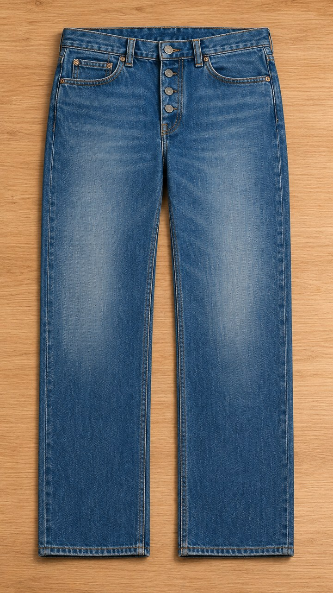

Джинси Levi’s 501, W32 L32900 грн · Одеса
Джинси Levi’s 501, W32 L32900 грн · Одеса

Створено AI900 грнШукайте в TRAD: 4821
Відео для TikTok та Reels
Відео на 5–8 секунд із ваших фото, з музикою, ціною й кодом TRAD. Камера рухається, річ лишається такою, як на фото.
Додайте фото деталей і етикетки. Додати фото
Зазвичай це займає до 2 хвилинСтворюємо відео
Добираємо фото
Зазвичай це займає до 2 хвилин. Можете закрити студію — повідомимо, коли відео з’явиться в розділі «Мої матеріали».
ЗакритиНе вдалося створити відео
Ваша безкоштовна спроба ще доступна.
ЗакритиЗвірте відео з оригінальними фото